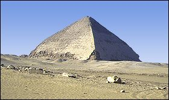

|
'Bent' Pyramid
The 'Bent' pyramid at Dahshur shows us that the ancient Egyptians experimented a lot with the slope of the pyramids. In the middle of construction the builders must have decided that the slope of the building was too steep to continue.

'Bent' Pyramid at Dahshur
The top half of the pyramid has a different slope. This slope was used by later pyramid builders.
Close
|